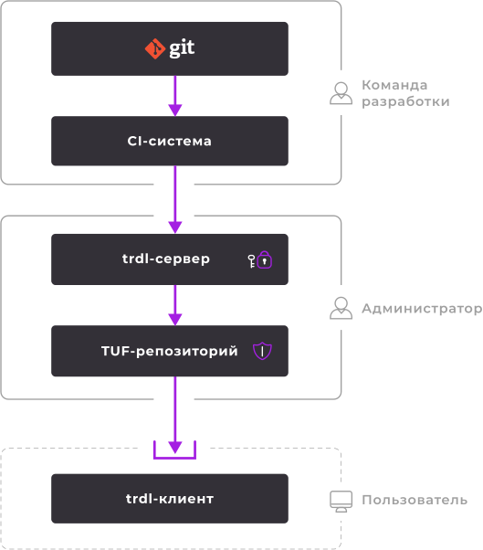

<section class="intro__section">
  <div class="container">
    <div class="intro__wrap">
      <div class="intro__content">
        <div class="intro__title block__title">Безопасная <br>и непрерывная <br>доставка</div>
        <div class="intro__subtitle block__subtitle">Просто, надежно, быстро</div>
        <div class="intro__desc block__description">
          <p>
            <b>trdl</b> — Open Source-решение, которое обеспечивает безопасный канал доставки обновлений от&nbsp;Git-репозитория до&nbsp;хоста пользователя.
          </p>
          <p>
            Команда проекта выпускает новые версии&nbsp;ПО и&nbsp;переключает их в&nbsp;каналах обновлений.
            Git используется как&nbsp;единственный источник правды,
            <span class="footnote footnote--dark"
            title="Vault — менеджер секретов, разработанный HashiCorp. В trdl мы используем собственный плагин Vault,
            адаптированный для безопасной доставки пакетов. <a href='https://www.hashicorp.com/products/vault'>Подробнее о Vault</a>.">Vault</span>
            — как&nbsp;инструмент верификации операций, наполнения и&nbsp;сопровождения
            <span class="footnote footnote--dark"
            title="TUF (The Update Framework) — фреймворк, который применяется для защиты систем обновления ПО. TUF-репозиторий — любое хранилище (например, S3),
            для работы с которым используются инструменты безопасности TUF. <a href='https://theupdateframework.io/'>Подробнее о TUF</a>.">TUF-хранилища</span>.
          </p>
          <p>
            Пользователь выбирает канал обновлений, использует и непрерывно получает актуальную версию
            <span class="footnote footnote--dark"
            title="Программой может быть что угодно: бинарный файл, shell-скрипт и даже Ansible-плейбук">ПО</span>
            из&nbsp;TUF-хранилища.
          </p>
        </div>
        <div class="intro__buttons">
          <a href="https://github.com/werf/trdl" target="_blank" class="intro__link">
            <button class="intro__button--gh button">GitHub</button>
          </a>
        </div>
      </div>
      <div class="intro__scheme">
        
      </div>
    </div>
  </div>
</section>
